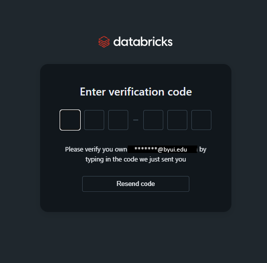

PySpark Notebook
Welcome to the PySpark Skills Notebook!
This website is designed to be a personal reference guide for learning and using PySpark. It contains a series of short, focused mini-tutorials that walk through the core tools and concepts used when working with PySpark particularly in the context of Databricks using Deweydata.
Introductions
Dewey Data
What is Dewey Data?
Dewey Data is a company with a large selection of datasets, that are excessible without the hassle that many researchers and data analysts face of getting individual data licenses and even finding datasets in that are well documented and maintained. They have created an environment where data filtering and exploration has been catered to the individual or group using it. They strive to have a wide variety of datasets that allow users to research and download data collected across many companies, that range from weather and temperature data, all the way to consumer data, and much more. Because of this, and their collaberation with Brigham Young University Idaho, they are a great resource for students to extract, experiment with, analyze the data, especially for classes in the data science and statistics departments.
Why do we use Dewey Data?
We use Dewey data because their site design not only allows for students to download and explore larger datasets, but also allows for sample data to be downloaded and examined. This sample data can be used to help students learn and practice python coding functions such as the ones used in PySpark. While the larger datasets give students to opportunity to explore the magnitude and complexity of real world data, while also being in an environment where that can still make mistakes and learn from them for the future. Additionally, the resource allows for (as mentioned above) an easier access and viewing of data without having to worry about the licensing for thata data.
How to Get Dewey Data Sample Sets
- Login into your Dewey Data account. You will see the welcome page as shown below, or something similar to it. Search for a data set that sound interesting, either in the search bar or scroll through the ones you see on the welcome page.
(Home Page View) 
- Your screen will change to something that look similar to this. Go to the top right corner and click on the text that says “Get Sample”

- Once you do, this will give you access to an excel file, that you can use to practice your coding. It will look like this or something similar.

How to set up your Dewey Data account
- (I will look into this later)
For additional information on how to how to access the data within Dewey Data, and how to convert the raw data into a dataframe, please see “ConsumerEdgeFirstTime” (Github site from Fall 2025 project)
PySpark
PySpark is a python package that has built for the ease of processing big data and performing analytics. It allows users to process and compute the data effieciently without putting strain on the system. It also allows users to work with similar programming along side things like SQL or Machine Learning. We will be using it for our projects in this class because of the quality and effectiveness we have found in teaching students to use it and it’s ease of integration with pandas or polars, which have been used throughout most of the other courses taken up to this point.
Installing PySpark
Type in the code below to install the package in your coding studio to insall PySpark.
Importing PySpark Tools
Atfer installing but, before working with data in PySpark, you need to import the tools PySpark provides. These imports give you the core building blocks you will need to get started with PySpark.
Import Spark Functions
This import gives you access to built-in PySpark functions used to transform and analyze data.
Some commonly used functions include:
F.col() → reference a column F.lit() → create a constant value F.when() → conditional logic F.sum(), F.avg() → aggregations F.concat() → combine text columns
This import gives you access to Spark’s data types, this is necessarily when doing things like defining schemas.
Import Spark Data Types
Next you will need to import the Spark data types. These are used when defining schemas, which specify the structure and data types of columns in a DataFrame.
This is especially useful when creating DataFrames manually or when you want more control over how Spark interprets your data. Import the Spark data types with the following code:
Import for PySpark Session
Lastly you will need to import to start your Spark session, which is the main entry point to Spark.
Important: This step is not required when working in Databricks. Databricks automatically creates a Spark session (spark), so you do not need to manually start one. However, if you are working in a different environment you will most likely have to start your session manually.
If you need to start a Spart sesstion use the following code:
Databricks
What is Databricks?
Databricks is a programming studio that can host the coding languages, Python, SQL, Scala, and R. It is a platform meant to be focused on machine learning, data processing, data engineering, and data analysis. The program is different from other coding studios in that it makes a difference for users by allowing for a cloud-based storage so that users don’t need to download the data completely themselves. We will be using large amounts of data in this class and will be using it for the purpose of the cloud storage, which we will need for that datasets that our class is using throughout the semester.
How do you set it up?
The set up for Databricks is pretty simple. Please follow the instructions below.
- Go to databricks.com and click on the Try Databricks button.

- Once you are on the next page, you will see a login section on the left of the page. Click on the Continue with Microsoft button.

- This should take you to a page either asking you to log into an account or asking you to pick an account. If it is the first option, it should redirect you to a page that will have you login to your school account. If not, click on the account you want to use
- You will see a screen that asks you to enter a verification code. Look in the email that you logged in with mailbox, and find the six digit code (it will be a mix of numbers and letters). If it is the correct code, it should direct you to the next page

- You may need to verify a name and then click Continue. After that you will reach the homescreen for Databricks.

Additionaly, when using it from that point, if you would like to start a blank project, go to the top left corner, and click on the rounded rectangular icon next to the databricks logo. This will open up a side menu. Click on the option that says, + New and then in the secondary sidemenu that gets opened click on the Notebook button. Now you are ready to start your first project